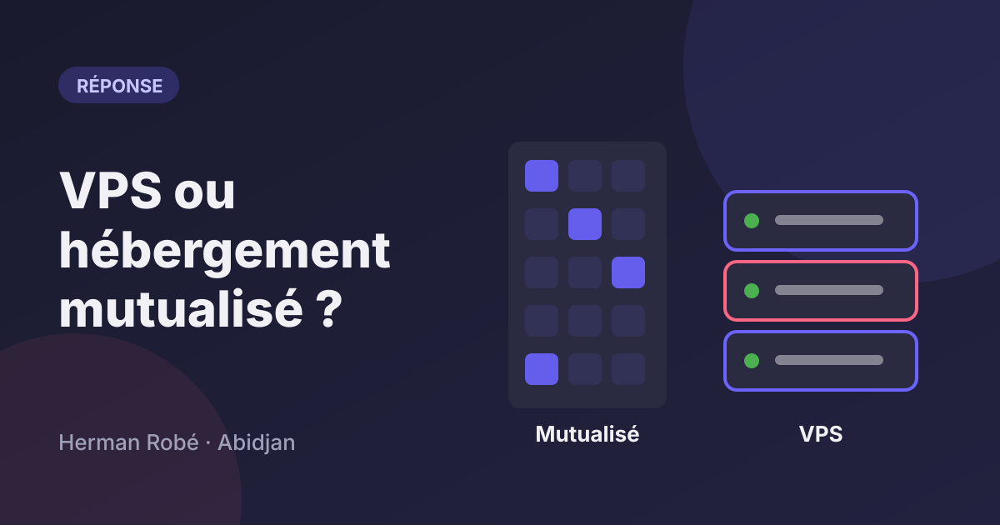
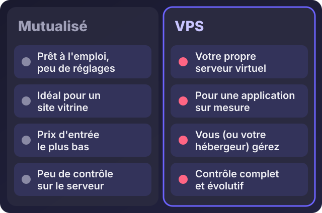
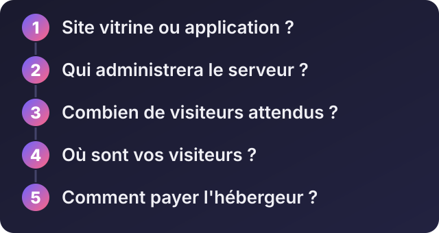

VPS ou hébergement mutualisé : lequel choisir pour votre site ou votre application ?

Écouter cet article · environ 5 min
Vous avez un site ou une application, il faut maintenant le mettre quelque part pour que tout le monde puisse y accéder. C'est le rôle de l'hébergement. Et là, deux mots reviennent tout le temps : hébergement mutualisé et VPS. Voici la différence, et surtout comment choisir.
L'image qui explique tout
Un hébergement mutualisé, c'est un appartement dans un immeuble : vous partagez le bâtiment, le gardien et les charges avec beaucoup d'autres. C'est simple, c'est peu cher, mais vous n'avez pas le droit de percer les murs.
Un VPS (serveur privé virtuel), c'est une maison à vous : une part de serveur qui vous est réservée, où vous installez ce que vous voulez. Vous avez plus de liberté, et aussi plus de responsabilités.

Quand choisir le mutualisé
- Vous avez un site vitrine, un blog, un site WordPress ou un petit site PHP.
- Vous n'avez pas de compétences serveur et vous n'en voulez pas.
- Vous voulez que tout soit géré pour vous : panneau de gestion, adresses e-mail, certificat de sécurité (le petit cadenas) et, selon l'offre, sauvegardes.
- Vous voulez le prix d'entrée le plus bas.
Quand choisir un VPS
- Vous avez une application sur mesure (Node.js, Python, une API, des tâches qui tournent en arrière-plan).
- Vous voulez installer des logiciels particuliers, ou héberger plusieurs sites et applications au même endroit.
- Votre trafic grandit, ou vous avez besoin de performances stables.
- Vous voulez du contrôle sur la configuration.
Géré ou non géré : la vraie question
Un VPS « non géré » est livré presque vide : c'est vous qui installez le système, les logiciels, la sécurité, les mises à jour et les sauvegardes. Un VPS « géré » est administré par l'hébergeur ou par un prestataire, ce qui coûte plus cher.
Cinq questions avant de choisir

- Site vitrine ou application ? Le vitrine va très bien en mutualisé.
- Qui administrera le serveur ? Si personne, restez en mutualisé ou prenez un service géré.
- Combien de visiteurs attendez-vous ? Pour un site local, le mutualisé suffit longtemps.
- Où sont vos visiteurs ? La plupart des hébergeurs ont leurs serveurs en Europe ou en Amérique. Pour des visiteurs en Côte d'Ivoire, un site bien fait reste rapide, surtout avec un réseau de distribution comme Cloudflare, qui a une offre gratuite.
- Comment allez-vous payer ? Beaucoup d'hébergeurs n'acceptent que les cartes bancaires internationales. Vérifiez les moyens de paiement avant de vous décider.
Mes recommandations
Je distingue ce que j'utilise moi-même et ce que je recommande d'après des critères. Les offres et les prix changent souvent : comparez toujours sur le site de l'hébergeur, à la date où vous achetez.
Celui que j'utilise : Hetzner. Mes propres projets tournent sur un VPS chez eux. Un petit serveur d'environ trois processeurs virtuels et quatre gigaoctets de mémoire fait tourner plusieurs sites et applications. C'est un VPS non géré : il convient si vous êtes à l'aise avec Linux, ou si quelqu'un l'administre pour vous.
Pour un site vitrine ou WordPress, en mutualisé : Hostinger, o2switch et OVHcloud sont des références courantes, avec des offres pensées pour débuter. Comparez leurs offres actuelles et leurs conditions.
Pour un VPS non géré : Hetzner, DigitalOcean ou OVHcloud.
Pour un VPS géré, sans compétences serveur : certains hébergeurs, dont Hostinger, proposent des offres où l'administration est incluse. Sinon, faites-le administrer par un prestataire.
Une précision sur les liens
Certains liens de cet article pourront être des liens d'affiliation, signalés par la mention « lien affilié ». Cela signifie que je peux recevoir une commission si vous achetez, sans que votre prix change, et sans que cela modifie mon avis : je ne recommande que ce que j'utilise ou ce qui répond à des critères sérieux.
Les erreurs à éviter
- Prendre un VPS sans savoir l'administrer.
- Acheter sur la promesse « illimité ». Aucun hébergement n'est vraiment illimité ; regardez les limites réelles.
- Laisser le nom de domaine au nom du prestataire. Il doit être au vôtre.
- Ne pas sauvegarder hors du serveur. Une sauvegarde au même endroit que le site ne vous sauvera pas d'une panne.
- Ne jamais mettre à jour.
Si vous voulez de l'aide
Je peux choisir et installer votre hébergement, sécuriser un VPS, migrer un site existant ou administrer votre serveur pour que vous n'ayez plus à y penser. Décrivez-moi votre projet sur WhatsApp : je vous dis ce qu'il vous faut vraiment, sans vous vendre plus que nécessaire.